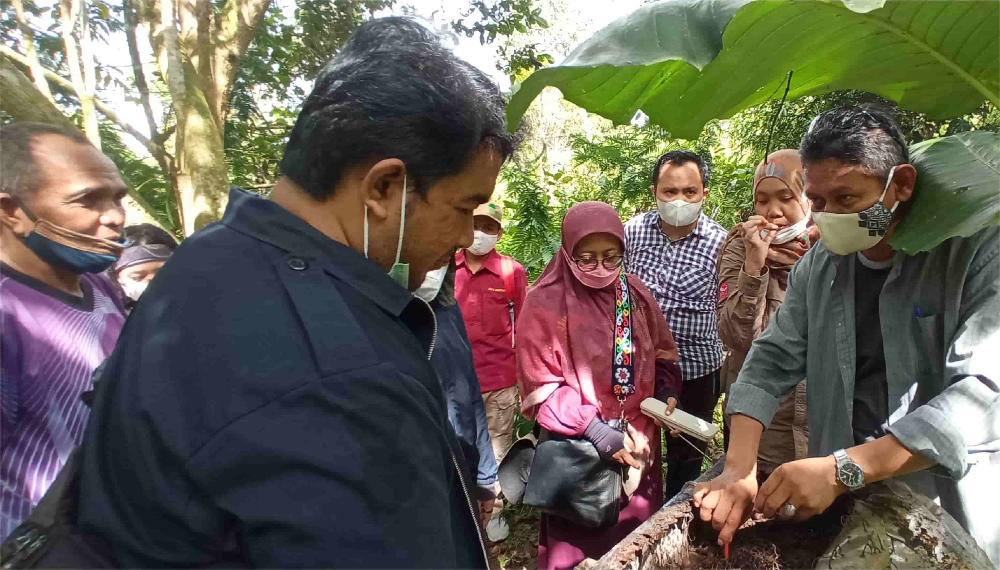

United Nations In Indonesia
Country Results Report 2021
Climate Change Adaptation and Mitigation,
Reduced Environmental Degradation, and
Improved Early Warning Systems for Disaster
Risk Reduction

In December 2021, an eruption at Mount Semeru in East Java killed at least 57 people and, destroyed more than 5000 homes. The volcano’s tragic eruption— and villagers’ complaints over the lack of notice they received— underscored the importance of disaster preparedness and effective early warning systems.
UN technical assistance through 2021 strengthened the planning processes of the National Disaster Management Agency and its coordination with civil society actors and the private sector. For example, the UN supported the agency in enhancing its logistics information system, called InaLogPal, through the integration of a capacity assessment tool that feeds in information on subnational coordination mechanisms and the state of local logistics preparedness in disaster- threatened or afflicted areas.
Big data can inform personal as well as policy responses to disasters. There are now more than 72,000 users of a UN—National Board for Disaster Management (BNPD) collaborative personal risk management application called InaRISK. In 2021, those users benefitted from an amendment that enables them to track COVID-19 risk in any given area, make an accurate assessment of f their family’s vulnerability level, and receive risk mitigation advice. The InaRISK app was also amended in 2021 to improve access for people with disabilities.
As COVID-19 has shown, disaster risk reduction requires a whole-of-society approach. A UN collaboration with the Meteorological, Climatological, and Geophysical Agency, the National Disaster Management Agency, the Food Security Agency of the Ministry of Agriculture and Statistics Indonesia produced three seasonal bulletins on the impact of hydrometeorological hazards on food security and nutrition. The information in the bulletins, which included the weather outlook, informed the Government and partners on the development of hazard preventive actions, and required interventions. Meanwhile, a strategic discussion on essential food and non-food supply chains during prolonged disasters, including the COVID-19 pandemic engaged more than 200 stakeholders, including at the national and sub- national government levels. The dialogue produced recommendations to ensure the availability of essential goods and build resilience in food supply chains that the UN and the Coordinating Ministry will jointly follow up on in 2022.
Experience has shown that specific vulnerable groups are disproportionately affected in post-crisis situations. In response, the UN delivered risk reduction, response, and recovery solutions to support the needs of these groups, including children and youth, older persons, people living with disabilities, people living with HIV-AIDS, ex-combatants, people on the move such as migrants and refugees, and others identified as vulnerable. Under the UN’s PETRA project, for example, a cash-for-work scheme in West Nusa Tenggara and Central Sulawesi facilitated the participation of 98 women and nine people with disabilities in the rehabilitation and reconstruction of community infrastructure, with livelihood training provided to a further 73 women in North Lombok and East Lombok.
Another recovery assistance project in Lombok and Central Sulawesi worked with the Geological Agency to develop nine community infrastructure projects following an earthquake and tsunami that hit the region in 2018. On completion, these projects will provide more than 3,000 households with better access to water for domestic use and farming, and better access to markets for their farmed products. Rebuilds included gender-sensitive facilities such as lactation rooms in health centers and ensured equal employment opportunities for women. Lauding the project’s employment of 36 women construction workers as an example of good practice on gender equality, the Vice Governor of West Nusa Tenggara said it “helps women’s lives and reduces their vulnerability in the post-earthquake crisis and current pandemic.”
In Tanjung Benoa, Bali, the UN is engaging with indigenous communities to plan and organise tsunami evacuation drills among other aspects of community disaster preparedness. This initiative has directly benefitted 588 students at three schools and 203 community members involved in supporting the drills. It indirectly benefits Tanjung Benoa’s entire population of 5,700.
On climate change mitigation and adaptation, the Indonesian Environment Fund (IEF) under the Ministry of Finance is now implementing results-based payments for the UN Green Climate Fund’s REDD+ (Reduced Emission from Deforestation and Degradation) financing model. REDD+ is designed to reduce greenhouse gas emissions from deforestation and forest degradation in developing countries. Its implementation will aid the preparations and adjustments required for Indonesia’s updated Nationally Determined Contributions (NDC) submitted in July 2021, and the Presidential Regulation on Economic Value of Carbon signed in October 2021, so that Indonesia can better meet its climate targets.
In 2021, the UN began developing the National REDD+ Implementation Strategy 2021 – 2030 in alignment with the updated NDC and Long-Term Strategy for Low Carbon and Climate Resilience 2050 involved 452 participants, 34% female and 66% male.